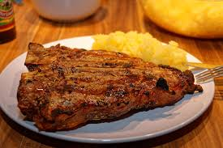
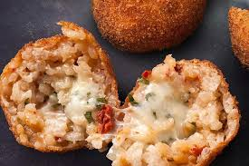

Culinária Italiana |
| A Itália é renomada por sua culinária diversificada e rica, que conquistou admiradores em todo o mundo. Conheça alguns dos pratos típicos italianos que são verdadeiras delícias e representam a essência da gastronomia do país: |
PizzaOriginária de Nápoles, a pizza é um símbolo da culinária italiana. A versão tradicional, Margherita, é feita com tomate, mussarela e manjericão. Esta combinação simples e saborosa é um verdadeiro clássico e foi reconhecida pela UNESCO como Patrimônio Cultural Imaterial da Humanidade. |
RisotoEste prato cremoso é uma especialidade do norte da Itália, feito com arroz Arborio ou Carnaroli, cozido lentamente em caldo. Uma das variações mais famosas é o Risotto alla Milanese, preparado com açafrão, que lhe confere uma cor amarela vibrante e um sabor único |
LasanhaEste prato em camadas de massa, molho à bolonhesa, queijo e bechamel é uma especialidade de Bolonha. A combinação rica e saborosa faz da lasanha um dos pratos mais amados da culinária italiana. |
Bistecca alla FiorentinaTípico da Toscana, este é um bife grosso de carne bovina, tradicionalmente grelhado e servido mal passado. É um prato suculento e saboroso, ideal para os amantes de carne. |
|  |
TiramisùEsta famosa sobremesa italiana é feita com camadas de biscoito embebido em café, creme de mascarpone e cacau em pó. Originário de Treviso, no Vêneto, o tiramisù é adorado em todo o país. |
AranciniBolinhos de arroz recheados, empanados e fritos, são uma iguaria da Sicília. Os recheios variam, mas a versão mais comum é com ragu de carne e queijo. Estes salgadinhos são crocantes por fora e deliciosamente cremosos por dentro. |
|  |
FocacciaUm pão achatado e macio, regado com azeite e sal. As variações incluem coberturas de ervas frescas, azeitonas e cebolas. É um prato simples e versátil, perfeito como aperitivo ou acompanhamento |
BruschettaFatias de pão torrado cobertas com tomates frescos, alho, manjericão e azeite. Este antepasto é simples, mas cheio de sabor, e é uma excelente introdução à culinária italiana. |
ConclusãoA culinária italiana é uma celebração de ingredientes frescos e sabores autênticos, variando significativamente de uma região para outra. Cada prato típico conta uma história e proporciona uma experiência gastronômica única que vale a pena explorar. |
|
|